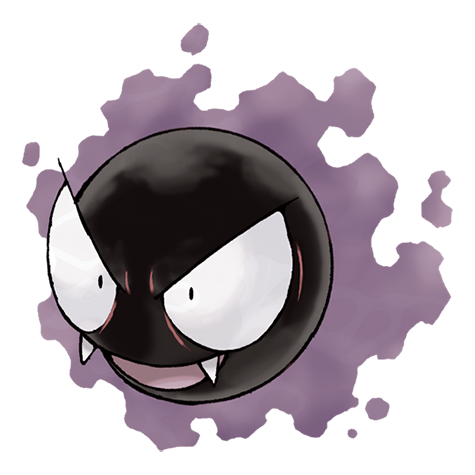

Tipo:
Fantasma
Veneno
Descripción:
Gastly está compuesto casi en su totalidad por gas venenoso. Puede envolver
a sus oponentes y hacerlos desmayar sin previo aviso. Su cuerpo etéreo le
permite aparecer silenciosamente en la oscuridad.